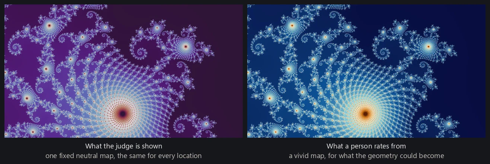
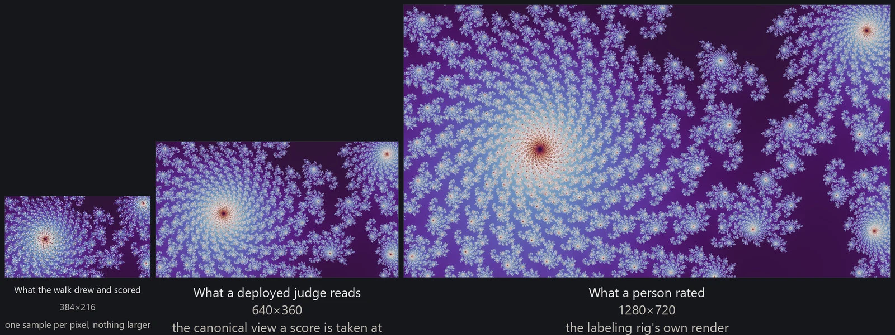
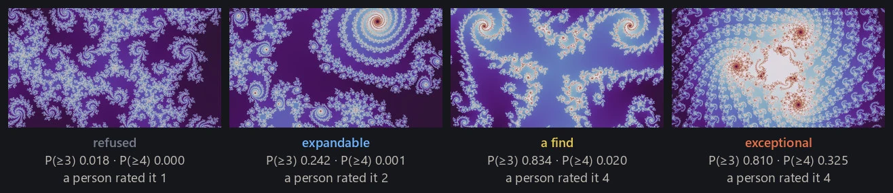

Two learned judges supply the pipeline's quality scores. The location judge rates a place before any color is chosen, and the render judge rates a finished candidate picture. They answer on the same four-point scale and are trained by the same general method, but they are two different networks fitted to two different collections of ratings, and they act at different points. A third, smaller network chooses palettes rather than rating quality; it is trained by a different method and is covered in color palettes.
The rating scale
Every judge is trained on ratings made by hand on the same four-point scale. A 1 is junk: empty, black, or noise. A 2 is unremarkable, in that something is there but nothing worth keeping. A 3 is good wallpaper material. A 4 is exceptional. The top class is not only a tiebreak. Each judge reports the chance of a 4 separately from the chance of at least a 3, and the pipeline reads both: the walk uses the first to mark a find as exceptional, and curation uses it again to decide which candidates it will consider at all.
A few extremes are obvious, such as a frame that is practically all black or practically flat, and everything in between depends on taste and on use. I rated everything according to my own preferences for desktop wallpapers. Fine-tuning the judges toward a different taste would be straightforward, and the labeled datasets are published for exactly that purpose.
What is rated differs from judge to judge. A location rating asks whether a place could make a good wallpaper, so it is made from two renders of the same frame at once, one in the neutral palette and one in a vivid palette that shows what the geometry can become, and it answers for the geometry rather than for either picture. A render rating asks whether this picture is worth keeping, and is made from exactly the picture that was rendered: its mode, its settings, its palette. The corpus holds ratings for more than twelve thousand locations, about six thousand smooth renders, and about five thousand renders in the other modes.

The ratings were gathered iteratively: rate a batch, retrain, use the new judge to find more material, and rate that. This selects the corpus as much as it grows it. Later examples are largely the harvest of earlier judges, so the ratings over-represent the kinds of place and picture those judges already liked. Batches drawn deliberately against that pull, aimed at under-seen modes, colors and score bands, reduce the effect without removing it.
What the judge sees
The location judge scores a small render of the frame, 384 by 216 pixels at one sample per pixel. It is the same render the walk's gates already examined, so no larger render is drawn for scoring. Ratings, by contrast, are made from larger renders, at 1280 by 720. The training corpus sits between the two and is cached at three regimes: the frame the walk scores, and a larger frame at each of two sampling rates. The judge is trained on all three, so its score means the same thing at each of them.
Training also varies the palette, which deployment does not. Each rated location is cached as a fan of small renders: one is pinned to the neutral palette the judge will be given in production, and the rest draw a palette at random from a tracked pool, alongside small crops, shifts and quality changes. A further set of palettes is held out of that pool entirely, so a finished judge can be read on colorings it has never seen. The aim is not a judge blind to color but one that does not mistake a palette for the thing being rated: a location score is supposed to be about the place.

The render judge scores the picture that was drawn to be judged, its mode, its settings and its palette, at 640 by 360, stretched from there to the network's input. Nothing is judged at wallpaper size; a full-resolution render is what a passing score buys. One judge covers the plain smooth rendering and every other mode in the catalog rendering modes describes. The two kinds keep separate collections of ratings and separate bars downstream, but the judging is one network trained on both at once. Sharing the ratings is what earns that: it helps the scarcer of the two collections, and giving each kind its own classifier on top of the shared network bought nothing.
Network design and training
Each judge is a MobileNetV4 convolutional network pretrained on ImageNet, with its classifier replaced and the whole network then fine-tuned on the ratings. This is standard transfer learning. What is specific to the problem is the ordered target, the way the pictures are prepared, and the discipline about what a score means once the network has been retrained.
The two judges do not use the same one. The location judge takes a medium variant, pretrained at a larger input size and on a larger slice of ImageNet, on the order of ten million parameters. The render judge takes a substantially smaller variant, well under half that. Capacity was settled by measurement in both cases and the two answers differ. For locations, larger convolutional and transformer networks bought nothing over the medium. For finished renders the pressure runs the other way: the ratings of the non-smooth modes are the scarcer collection, and a larger network fed on them arrives overconfident, which the smaller one avoids without giving up discrimination. There is no general rule here that smaller is better, only two questions with different amounts of data behind them.
A four-point rating is ordered, not categorical: a 3 is closer to a 4 than a 1 is, and an ordinary classifier throws that ordering away. Keeping it is the one place the recipe is fitted to this problem rather than taken off the shelf. The judges are trained by ordinal regression. The network answers three questions, each conditional on the one before: is this at least a 2, and given that, is it at least a 3, and given that, is it at least a 4. Multiplying along the chain turns those conditional answers into unconditional ones, and the product is what keeps them consistent, since nothing can come out more likely to be a 4 than to be at least a 3. Two of the results are read downstream: P(≥3), the chance a picture would be rated at least good, and P(≥4), the chance it would be rated exceptional.
The rest of the recipe is ordinary, and the two judges no longer share it. The location judge runs a forty-epoch cosine schedule. The render judge stops early against a twenty-epoch ceiling, and the run that ships stopped before reaching it. Both fit comfortably on one ordinary GPU. Beyond the palettes described above, the location judge's augmentation is the variation that is real at deployment: small border crops, flips, re-encoding around the quality its renders are cached at, and brightness and contrast changes of a few percent. The render judge gets crops and flips and nothing else, because for it the coloring is part of what is being rated, and any change to the color edits the question.
Evaluating a judge
A judge's ratings come from one person, so the test is whether it agrees with that person on pictures it has never seen. Sets kept for that purpose are held out by neighborhood rather than by frame, since nearby frames are near-duplicates and a judge could otherwise pass by memorizing a location's neighbor, and they are kept out of training entirely. What such a set can answer is narrower than it looks: one assembled around a particular cut can measure that cut and not another, and one that has been shown the judge's own answer cannot measure the judge at all. Separating the good from the bad and ordering the very best are also different questions, and a judge that has done the first is not thereby good at the second.
From a score to a decision
A judge returns a probability; the pipeline acts on thresholds. Where each threshold comes from matters, because a judge's numbers shift every time it is retrained.
The location judge has three of them, two on P(≥3) and one on P(≥4). Above the admission bar a frame is recorded as a find. Between the expansion bar and the admission bar it may be explored through but is not a find. Above a separate exceptional bar, the one read on P(≥4), a find counts as exceptional when supply is balanced across partitions, the buckets the project keeps its books in: one per family at one degree, with a parameter plane counted apart from its dynamical twin (finding good wallpapers).

Each was set once, and after every retrain the three are restated by volume: over a fixed reference pool of tens of thousands of locations, the new threshold is the score on the new judge that passes the same fraction of the pool as the old threshold passed on the old judge. The restatement reads no ratings, which is what makes it a restatement and not a recalibration. It preserves how much flows, not which frames: between a tenth and a seventh of the pool changes sides at each cut while the fraction passing stays where it was, and where a keeper starts on the new scale is left exactly as open as it was before.
The render judge's bars are fitted rather than restated, one per kind, because the two collections of ratings have different base rates and the same number can sit above what one supports and below what the other does. Each is fitted from its own kind's ratings: a monotone curve through the rated pictures gives the keeper rate as a function of the score, and the bar is the score at which that rate reaches even odds, rounded up so it errs toward refusing. One of the two acts: a picture in one of the other modes scoring below its bar is not released, whatever the supply, and a slot it would have taken goes unfilled. The bar for the plain smooth rendering is fitted the same way and annotates rather than refusing. Each is stamped with the exact judge it was fitted against, and is never applied to a judge it was not fitted on.
Neither bar decides where the gallery is chosen. Eligibility there is a flat one half on P(≥4), a round number rather than a fitted one, and a slot with no picture over it is left unfilled rather than padded (gallery curation). Above that bar the judge is a gate with no order inside its own top: it says a picture is worth keeping, and says nothing about which of two keepers is better. The ordering that seats a gallery therefore comes from a second network trained for that question alone, on ratings made of pictures that had already cleared the bar. It orders only what is above the bar, and is deliberately kept out of the decision to delete a candidate, because a bad ordering at a seat costs a slot while a bad ordering at a deletion costs the picture. That ordering could not be read off the first judge's own internal representation: reusing those features and learning only a new output layer performed at chance on the question, and only retraining the whole network recovered it. Whatever separates a keeper from a non-keeper is not what separates a good keeper from a great one. What makes a gallery out of a pool is gallery curation's subject.
Generalization and its limits
The aim of a judge is not to memorize the neighborhoods that have already been rated but to learn what makes a frame good, in composition, framing, density and a more general sense of aesthetics, well enough to recognize it somewhere new. The judges do this to a useful degree and the search depends on it. How well they do it is harder to establish than it looks, because a high score on material the same judge selected is the judge agreeing with itself; only ratings made by a person on that new material settle the question.
The limits follow from how the ratings were gathered. A judge trained on the harvest of its predecessors is surest about the regions the search has already visited and least sure about the rest, and if its taste drifts toward what it has already seen, the search narrows onto ground the corpus already covers. The project pushes back at several points rather than assuming the loop closes on its own: the walk reserves a share of every batch for untouched roots (finding good locations, Prioritize), and batches of pictures to rate are drawn on purpose at under-seen modes, colors and score bands. Those help, and what comes out is still a selected population rather than a sample of what the fractals could produce. The judges are best read as instruments tied to one person's ratings and to one score scale, rather than as measures of whether a fractal is beautiful.